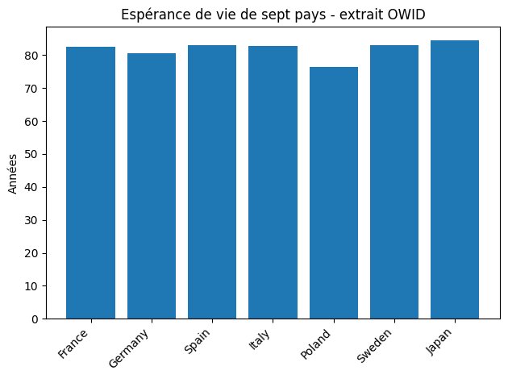
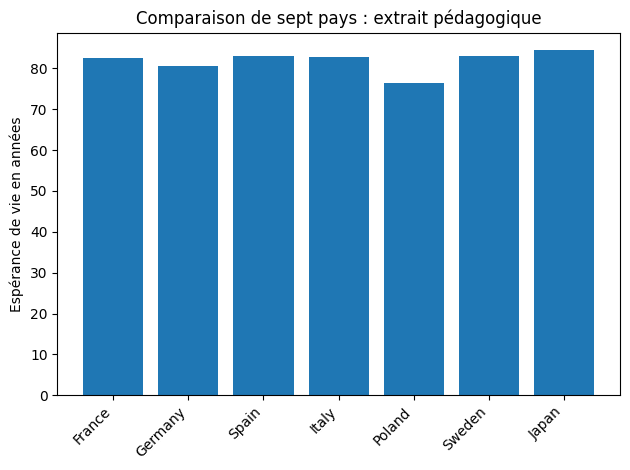

Corrigé TD1
Premiers scripts et statistiques descriptives simples
Les exercices se suivent : le Japon ajouté à l’exercice 6 reste présent ensuite. Les statistiques portent donc sur sept pays. Aucun recours à pandas, aux boucles ou aux fonctions personnelles n’est nécessaire dans ce TD.
Les exercices se suivent. Utiliser Tab puis Entrée ou Espace pour ouvrir une solution au clavier. Les zones de code peuvent défiler horizontalement.
Les sorties ci-dessous proviennent du code exécuté. Les simulations du TD4 peuvent changer à chaque exécution.
Démarche en pseudo-code 1 — Décrire une petite liste d'indicateurs
# Objectif : decrire une liste de valeurs OWID
# Entree : une liste de pays et une liste de valeurs
# 1. Afficher les donnees de depart
# 2. Calculer le nombre d'observations
# 3. Calculer la moyenne
# 4. Reperer la valeur minimale et maximale
# 5. Afficher une phrase avec une unite
# Sortie : statistiques + interpretation courteLes exercices ci-dessous mettent en œuvre ce plan.
Démarche en pseudo-code 2 — Passer d'une liste à un graphique
# Objectif : representer des valeurs par pays
# Entree : liste de pays, liste de valeurs
# 1. Creer une figure
# 2. Tracer une barre par pays
# 3. Ajouter un titre et une unite sur l'axe vertical
# 4. Sauvegarder la figure dans un fichier png
# Sortie : graphique lisibleLes exercices ci-dessous mettent en œuvre ce plan.
Exercice 1 — Préparer un dossier de travail
Objectif. Créer, sauvegarder et exécuter un premier script.
Afficher la solution : exercice 1
Démarche de résolution
Créer le dossier TD1 dans l’explorateur de fichiers, l’ouvrir dans VS Code, puis enregistrer td1_nom_prenom.py dedans. Dans le terminal de ce dossier, lancer python3 td1_nom_prenom.py (ou py sous Windows). Modifier le message puis sauvegarder avant de relancer.
Code Python commenté
# Le dossier courant est celui du terminal ; le fichier exécuté est le .py nommé.
print("test TD1")
# Après modification et sauvegarde, c'est ce nouveau message qui apparaît.
print("test TD1 modifié")
Résultat et interprétation
Le terminal affiche les deux messages. Le fichier peut être enregistré dans un autre dossier que celui du terminal : vérifier le dossier courant si Python ne le trouve pas.
Sortie de l’exécution de référence :
test TD1
test TD1 modifié
Exercice 2 — Premières variables économiques
Objectif. Afficher les quatre variables, leurs types et une phrase lisible.
Afficher la solution : exercice 2
Démarche de résolution
Les guillemets désignent du texte ; un nombre sans partie décimale est un entier. Une f-string insère les valeurs entre accolades.
Code Python commenté
pays = "France"
annee = 2021
esperance_vie = 82.5
population_millions = 67.7
print(pays, type(pays))
print(annee, type(annee))
print(esperance_vie, type(esperance_vie))
print(population_millions, type(population_millions))
print(f"En {annee}, {pays} compte environ {population_millions} millions d'habitants.")
Résultat et interprétation
Types attendus : str, int, float, float. La phrase contient 2021, France et 67.7 millions. Ce sont les valeurs pédagogiques de l’énoncé, sans mise à jour à partir du CSV.
Sortie de l’exécution de référence :
France <class 'str'>
2021 <class 'int'>
82.5 <class 'float'>
67.7 <class 'float'>
En 2021, France compte environ 67.7 millions d'habitants.
Exercice 3 — Prédire puis modifier une affectation
Objectif. Prédire l’effet d’une nouvelle affectation.
Afficher la solution : exercice 3
Démarche de résolution
Python lit les lignes dans l’ordre : la deuxième affectation remplace la première. Refaire ensuite l’essai en remplaçant seulement 68.0 par 68.2.
Code Python commenté
population_millions = 67.7
population_millions = 68.0
# Prédiction : 68.0, car la deuxième ligne remplace 67.7.
print(population_millions)
population_millions = 67.7
population_millions = 68.2
print(population_millions)
Résultat et interprétation
Premier essai : 68.0 ; deuxième essai : 68.2.
Sortie de l’exécution de référence :
68.0
68.2
Exercice 4 — Premier débogage guidé
Objectif. Identifier puis corriger trois erreurs.
Afficher la solution : exercice 4
Démarche de résolution
Tester les lignes fautives séparément. Le dernier mot du message indique le type d’erreur, et le numéro de ligne désigne la ligne à examiner dans votre fichier. La numérotation dépend de son contenu.
Code Python commenté
# print("Bonjour" : SyntaxError sur cette ligne, parenthèse non fermée.
print("Bonjour")
# print(pay) : NameError sur cette ligne, nom absent ; le nom créé est pays.
print(pays)
# print("Population : " + population_millions) : TypeError sur cette ligne.
# La f-string accepte à la fois du texte et un nombre.
print(f"Population : {population_millions}")
Résultat et interprétation
Les corrections affichent Bonjour, France et Population : 68.2. Les lignes fautives restent en commentaires pour permettre l’exécution complète.
Sortie de l’exécution de référence :
Bonjour
France
Population : 68.2
Exercice 5 — Créer un extrait OWID simplifié
Objectif. Créer deux listes alignées et utiliser leurs indices.
Afficher la solution : exercice 5
Démarche de résolution
À une position donnée, le pays et son espérance de vie se correspondent. Le premier indice vaut 0 ; -1 désigne le dernier élément.
Code Python commenté
pays = ["France", "Germany", "Spain", "Italy", "Poland", "Sweden"]
esperance_vie = [82.5, 80.6, 83.0, 82.9, 76.5, 83.1]
print("Premier pays :", pays[0])
print("Première valeur :", esperance_vie[0])
print("Dernière valeur :", esperance_vie[-1])
print("Nombre de pays :", len(pays))
# esperance_vie[10] provoquerait IndexError : seuls 0 à 5 sont disponibles.
Résultat et interprétation
France ; 82.5 ; 83.1 ; 6 pays.
Sortie de l’exécution de référence :
Premier pays : France
Première valeur : 82.5
Dernière valeur : 83.1
Nombre de pays : 6
Exercice 6 — Modifier une liste sans la désaligner
Objectif. Ajouter le Japon et vérifier les longueurs.
Afficher la solution : exercice 6
Démarche de résolution
Ajouter un élément dans chacune des deux listes. Retirer temporairement la dernière valeur montre le désalignement ; la remettre avant la suite.
Code Python commenté
pays.append("Japan")
esperance_vie.append(84.5)
print("Nombre de pays :", len(pays))
print("Nombre de valeurs :", len(esperance_vie))
print("Les deux listes ont la même longueur :", len(pays) == len(esperance_vie))
# Essai temporaire : le dernier élément est retiré avec pop().
esperance_vie.pop()
print("Pendant l'essai :", len(pays) == len(esperance_vie))
esperance_vie.append(84.5) # Rétablir la correspondance avant le graphique.
Résultat et interprétation
7 pays et 7 valeurs ; True, puis False pendant l’essai. Les deux listes retrouvent finalement 7 éléments.
Sortie de l’exécution de référence :
Nombre de pays : 7
Nombre de valeurs : 7
Les deux listes ont la même longueur : True
Pendant l'essai : False
Exercice 7 — Moyenne, minimum, maximum
Objectif. Calculer le nombre, la moyenne, le minimum et le maximum.
Afficher la solution : exercice 7
Démarche de résolution
Additionner les valeurs puis diviser par leur nombre. Le nombre d’observations est un effectif ; les trois autres résultats sont exprimés en années.
Code Python commenté
nombre = len(esperance_vie)
moyenne = sum(esperance_vie) / nombre
minimum = min(esperance_vie)
maximum = max(esperance_vie)
print("Nombre d'observations :", nombre)
print(f"Moyenne : {moyenne:.2f} années")
print(f"Minimum : {minimum:.1f} années")
print(f"Maximum : {maximum:.1f} années")
Résultat et interprétation
7 observations ; moyenne 81.87 années ; minimum 76.5 ; maximum 84.5. Sans l’ajout du Japon, la moyenne des six valeurs serait 81.43 années.
Sortie de l’exécution de référence :
Nombre d'observations : 7
Moyenne : 81.87 années
Minimum : 76.5 années
Maximum : 84.5 années
Exercice 8 — Premier graphique avec matplotlib
Objectif. Enregistrer un premier graphique en barres.
Afficher la solution : exercice 8
Démarche de résolution
Les pays fournissent les étiquettes et les valeurs donnent la hauteur des barres. Incliner les noms et ajuster la mise en page évite qu’ils se chevauchent.
Code Python commenté
import matplotlib.pyplot as plt
plt.figure()
plt.bar(pays, esperance_vie)
plt.ylabel("Années")
plt.title("Espérance de vie de sept pays - extrait OWID")
plt.xticks(rotation=45, ha="right")
plt.tight_layout()
plt.savefig("esperance_vie_td1.png", dpi=300)
plt.show()
plt.close()
Résultat et interprétation
Le fichier esperance_vie_td1.png contient sept barres. Le Japon a la valeur la plus élevée ; la Pologne la plus faible.
Sortie de l’exécution de référence :

Exercice 9 — Modifier le graphique sans changer les données
Objectif. Changer la présentation en conservant les données.
Afficher la solution : exercice 9
Démarche de résolution
Créer une nouvelle figure et changer seulement le titre, le texte de l’axe et le fichier de sortie.
Code Python commenté
plt.figure()
plt.bar(pays, esperance_vie)
plt.ylabel("Espérance de vie en années")
plt.title("Comparaison de sept pays : extrait pédagogique")
plt.xticks(rotation=45, ha="right")
plt.tight_layout()
plt.savefig("esperance_vie_td1_version2.png", dpi=300)
plt.show()
plt.close()
Résultat et interprétation
Deux fichiers PNG distincts existent ; les hauteurs des barres sont identiques.
Sortie de l’exécution de référence :

Exercice 10 — Pourcentage d'évolution
Objectif. Distinguer variation en années et taux d’évolution.
Afficher la solution : exercice 10
Démarche de résolution
Soustraire la valeur initiale de la valeur finale. Pour le pourcentage, diviser cette différence par la valeur initiale, puis multiplier par 100.
Code Python commenté
france_2000 = 79.1
france_2021 = 82.5
variation = france_2021 - france_2000
taux_evolution = variation / france_2000 * 100
print(f"Variation : {variation:.2f} années")
print(f"Taux d'évolution : {taux_evolution:.2f} %")
Résultat et interprétation
Variation : 3.40 années ; taux d’évolution : 4.30 %. Le taux n’est pas 3.40 % : les unités et les opérations diffèrent.
Sortie de l’exécution de référence :
Variation : 3.40 années
Taux d'évolution : 4.30 %
Exercice 11 — Phrase d'interprétation
Objectif. Écrire les trois phrases d’interprétation demandées.
Afficher la solution : exercice 11
Démarche de résolution
Utiliser la moyenne réellement calculée après l’exercice 6 et comparer 82.5 à cette valeur.
Code Python commenté
# La moyenne simple de cet extrait de sept pays est de 81,87 années.
# La France, avec 82,5 années, se situe environ 0,63 année au-dessus.
# Ces sept pays choisis ne représentent pas le monde ; la moyenne n'est
# pas pondérée par la population et dépend de la sélection.
Résultat et interprétation
L’énoncé mentionne encore six pays dans sa limite, mais l’exercice 6 en ajoute un septième. L’interprétation retient les sept pays effectivement présents.
Exercice 12 — Contrôle final du script
Objectif. Vérifier les éléments du rendu final.
Afficher la solution : exercice 12
Démarche de résolution
Relire les exercices 1 à 11 puis relancer le fichier entier depuis un terminal neuf. Contrôler aussi les deux images dans le dossier courant.
Code Python commenté
# str : les noms de pays ; int : annee ; float : france_2021.
# list : esperance_vie ; moyenne : exercice 7 ; f-strings : exercices 2 et 7.
# Graphiques : exercices 8 et 9 ; évolution : exercice 10.
# Trois phrases d'interprétation : exercice 11.
print("Contrôle final : les exercices obligatoires du TD1 sont exécutés.")
Résultat et interprétation
Le script complet se termine sans erreur et produit les deux figures. Aucun fragment volontairement fautif n’est exécuté.
Sortie de l’exécution de référence :
Contrôle final : les exercices obligatoires du TD1 sont exécutés.
Entraînement facultatif
Ces dix questions sont également corrigées. Elles se lisent après le parcours obligatoire, dans l’ordre.
Question facultative 1 — Ajouter le Japon une seule fois.
Objectif. Ajouter le Japon une seule fois.
Afficher la solution : question facultative 1
Démarche de résolution
L’ajout demandé a déjà été réalisé à l’exercice 6. Vérifier le dernier couple plutôt que dupliquer l’observation.
Code Python commenté
print(pays[-1], esperance_vie[-1])
Résultat et interprétation
Japan 84.5. Ajouter le Japon une deuxième fois lui donnerait un poids double.
Sortie de l’exécution de référence :
Japan 84.5
Question facultative 2 — Créer une liste de populations documentées.
Objectif. Créer une liste de populations documentées.
Afficher la solution : question facultative 2
Démarche de résolution
L’énoncé ne donne pas ces nombres. On utilise les effectifs de 2021 du CSV population.csv du dépôt, convertis en millions et rangés dans le même ordre que les pays. Ce fichier source est fourni avec le corrigé.
Code Python commenté
# Source : population.csv du dépôt, année 2021 ; valeurs en millions.
populations_millions = [
66.083547, 83.697080, 47.735670, 59.729353,
38.040303, 10.416134, 125.679342
]
print("Populations en millions :", populations_millions)
print("Longueurs identiques :", len(pays) == len(populations_millions))
Résultat et interprétation
Sept valeurs alignées de France à Japan. Le CSV donne 66.083547 millions pour la France ; cette série diffère de la valeur pédagogique 67.7 de l’exercice 2 et ne la remplace pas.
Sortie de l’exécution de référence :
Populations en millions : [66.083547, 83.69708, 47.73567, 59.729353, 38.040303, 10.416134, 125.679342]
Longueurs identiques : True
Question facultative 3 — Calculer la population totale de l’extrait.
Objectif. Calculer la population totale de l’extrait.
Afficher la solution : question facultative 3
Démarche de résolution
Additionner les sept populations exprimées dans la même unité.
Code Python commenté
population_totale = sum(populations_millions)
print(f"Population totale : {population_totale:.3f} millions")
Résultat et interprétation
Le total porte sur ces sept pays en 2021 ; la sortie ci-dessous donne sa valeur calculée.
Sortie de l’exécution de référence :
Population totale : 431.381 millions
Question facultative 4 — Calculer la part de la France dans le total.
Objectif. Calculer la part de la France dans le total.
Afficher la solution : question facultative 4
Démarche de résolution
La France est à l’indice 0. Diviser sa population par le total puis multiplier par 100.
Code Python commenté
part_france = populations_millions[0] / population_totale * 100
print(f"Part de la France : {part_france:.2f} %")
Résultat et interprétation
Ce pourcentage concerne la population de l’extrait, pas la population mondiale.
Sortie de l’exécution de référence :
Part de la France : 15.32 %
Question facultative 5 — Afficher un couple pays-valeur.
Objectif. Afficher un couple pays-valeur.
Afficher la solution : question facultative 5
Démarche de résolution
Utiliser le même indice dans les deux listes.
Code Python commenté
print(f"{pays[0]} : {esperance_vie[0]} années")
Résultat et interprétation
France : 82.5 années.
Sortie de l’exécution de référence :
France : 82.5 années
Question facultative 6 — Interpréter un booléen.
Objectif. Interpréter un booléen.
Afficher la solution : question facultative 6
Démarche de résolution
Le signe > pose une question : la valeur dépasse-t-elle 80 ?
Code Python commenté
print(esperance_vie[0] > 80)
Résultat et interprétation
True : 82.5 est strictement supérieur à 80.
Sortie de l’exécution de référence :
True
Question facultative 7 — Observer l’effet d’un faux zéro.
Objectif. Observer l’effet d’un faux zéro.
Afficher la solution : question facultative 7
Démarche de résolution
Faire une copie avec [:] pour préserver la liste originale, puis remplacer la valeur française par 0 uniquement dans cette expérience demandée.
Code Python commenté
valeurs_test = esperance_vie[:]
valeurs_test[0] = 0 # Faux zéro : expérience de l'énoncé, pas donnée OWID.
print(f"Moyenne avec faux zéro : {sum(valeurs_test) / len(valeurs_test):.2f} années")
print(f"Moyenne initiale conservée : {moyenne:.2f} années")
Résultat et interprétation
La moyenne tombe à 70.09 années. Un zéro est traité comme une observation réelle ; il ne représente pas une valeur manquante.
Sortie de l’exécution de référence :
Moyenne avec faux zéro : 70.09 années
Moyenne initiale conservée : 81.87 années
Question facultative 8 — Nommer la source.
Objectif. Nommer la source.
Afficher la solution : question facultative 8
Démarche de résolution
Conserver le nom dans une chaîne et l’inclure dans une f-string.
Code Python commenté
source = "Our World in Data"
print(f"Source des extraits pédagogiques : {source}")
Résultat et interprétation
Source des extraits pédagogiques : Our World in Data.
Sortie de l’exécution de référence :
Source des extraits pédagogiques : Our World in Data
Question facultative 9 — Arrondir la moyenne.
Objectif. Arrondir la moyenne.
Afficher la solution : question facultative 9
Démarche de résolution
round renvoie un nombre arrondi ; le calcul précédent reste conservé dans moyenne.
Code Python commenté
print(round(moyenne, 1))
Résultat et interprétation
81.9.
Sortie de l’exécution de référence :
81.9
Question facultative 10 — Expliquer le rôle des unités.
Objectif. Expliquer le rôle des unités.
Afficher la solution : question facultative 10
Démarche de résolution
Un résultat chiffré a besoin de son unité pour être compris et comparé.
Code Python commenté
# Une espérance de vie se mesure en années ; une population peut être en
# habitants ou en millions : mélanger ces unités fausse les comparaisons.
Résultat et interprétation
Toujours préciser l’unité dans les axes, les phrases et les tableaux.
Sources et fichiers de référence
Les extraits des TD1 à TD4 sont ceux des énoncés. Les CSV complémentaires sont des copies des fichiers du dépôt, dont la date de téléchargement initial n’est pas documentée. Consulter les sources et empreintes SHA-256 des CSV.
Extension sur les populations : population.csv ; source Our World in Data — Population.